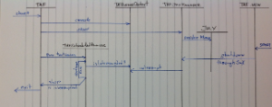

see:
 CIP-3303 -
Possibility to do a hot redeploy of tests by stopping one version and starting new
(
CIP-3303 -
Possibility to do a hot redeploy of tests by stopping one version and starting new
( Closed)
Closed)
| Problem: | Possibility to do a hot redeploy of tests by stopping one version and starting new
TAF runtime, which is controllable via Jenkins jobs and allows deployment and running of tests |
|---|
| Solution: | Add into TAF runtime JMX service who allow control TAF (stop) through Java JMX API |
|---|
Components:
| Taf | - Create and store TafRunnerContext
- Start TafJMXManagement
- Start TestNG and execute all test cases throught TafScheduledTestRunnervv
- Stop TafJMXManagement
|
|---|
| TafRunnerContext | Provide TAF Runtime context variables: isInterruptedisTerminated - TAF Runtime name
|
|---|
| TafJMXManagement | - Check system property "taf.manadement" and start if it is defined
- Try to find "old Taf runtime" through JMX
- Try to shutdown or kill "old Taf runtime" through JMX MBean com.ericsson.cifwk.taf:type=TafManager
- Create JMX MBean TafJMXManager and register it into JMX
|
|---|
| TafJMXManager | - Implement TafManager interface and provide it's functionality through JMX
- send received JMX command to TafRunnerContext
|
|---|
| TafScheduledTestRunner | - Check isInterrupted on TafRunnerContext
- Stop all testcases if Taf runtime is interrupted
|
|---|
TAF Runtime control flow:

TAF Runtime control parameters:
System propery | Used to control TafJMXManagement
possible value:
-Dtaf.management
-Dtaf.management=*
-Dtaf.management=servicename{;otherservice} - TafJMXManagement enabled if
taf.management - is defined with empty value, such as
-Dtaf.management - TafJMXManagement enabled if
taf.management is defined with * (star) value, such as -Dtaf.management=* - TafJMXManagement enabled if
taf.management is defined with service list and of the services name is jmxlocal, such as -Dtaf.management=jmxlocal
How to use: - from command line:
mvn test -Dtaf.management ...other parameters - in pom.xml, add systemProperty taf.management info exec-maven-plugin/configuration
|
|---|
System properties: taf.groupIdtaf.artifactIdtaf.version
| Used to create Taf Runtime name such as taf.groupId:taf.artifactId:taf:version.
This name used by TafJmxManagement to find corresponding old Taf runtime. TafJMXManagement stop old Taf runtime is current Taf runime has same name value.
If you do not define any or all of the values, the will use the defaults value: - for
taf.groupId default value is com.ericsson.cifwk.taf - for
taf.arfifactId default value is testcases - for
taf.version default value is 0
if jou not specifying any values, default Taf Runtime name is com.ericsson.cifwk.taf:testcases:0
How to use: - from command line:
mvn test -Dtaf.groupId=my.team.project ...other parameters - in pom.xml, add
systemProperty info exec-maven-plugin/configuration
|
|---|
How to stop Old Taf Runtime w/o running new tests
- Use non-existent suite name on command line: mvn test -Dsuites=Jabberwocky
or create empty suites.xml, such as
<!DOCTYPE suite SYSTEM "http://testng.org/testng-1.0.dtd" >
<suite name="stop-taf" />
and use mvn test -Dsuites=stop-taf.xml in command line
or add it's on pom.xml to exec-maven-plugin/configuration in pom.xml
{kind=link}
{kind=link}